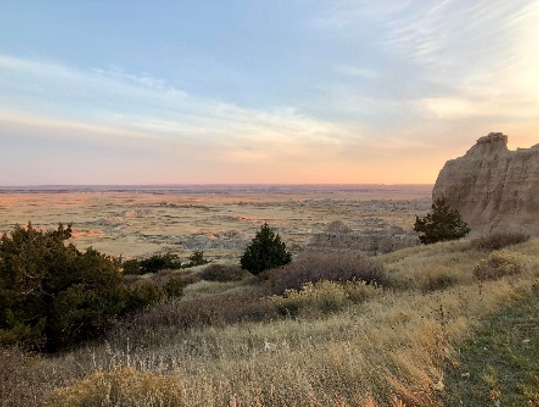

My Publications and Projects In-Depth
Portfolio page: should give demonstrations of your body of work, good to include: images, dates, titles, and descriptions of projects.
Below are some abstracts/summaries of my projects. Enjoy!
Above is a placeholder picture, which is another landscape that is being used in my simulation storyline.
- [1] Problem Statement & Objective: Low-earth orbit has been progressively polluted with space debris as a result of spacecraft being sent into space and their components being left unattended without retrieval, ultimately leading to unintended disintegration and dispersion; so to address this, we propose a cooperative multi-satellite laser nudging framework and software solution that will rely upon geographic information systems and ground-based telescope/radar systems to concurrently position and schedule space debris laser engagements via a multiagent system and queuing. Our framework will involve laser nudging space debris by satellites cooperating in a multi-agent system: other satellites that are taking a similar trajectory to another satellite will laser nudge the debris that would obstruct the paired satellites pathway based on insights gained from modeling and simulation methods that analyze environmental interactions. These agents will be represented as objects in an object oriented programming paradigm or as software agents in a multiagent system.
- [2] A literature and data review were performed to identify differences in research and development systems around the Asia-Pacific geographical region, which is comprised by East and Northeast Asia. The research and development intensities and gross expenditures for Japan, South Korea (ROK), China, Taiwan, and the United States (U.S.) were evaluated, and the international differences in educational attainment in STEM-fields at the undergraduate level and graduate level were considered as well. R&D performance and funding source differences were considered for all aforementioned countries. For the United States, differences in STEM educational attainment and representation for demographic groups were additionally considered. National innovation systems were defined, and the educational relationship was highlighted. Recommendations were provided based on the research conclusions. The research conclusions suggest that it would be beneficial to diversify the student populations that we educate in STEM fields, to increase educational access at the community college, undergraduate, and graduate levels, and to expand educational offerings at community colleges, to improve American competitiveness in the global economy for key strategic areas (CETs).
- [3] A “back end” software engineering and “front end” human-computer interaction approach to visualizing, processing, and representing a land-based operation’s information, objectives, and procedures was conceptualized and described through mind-mapping, natural language, and pseudo-coding. The approach involves allowing a multiagent operation team to input and visualize the data that they sense within their simulated environment using a modifiable dashboard, be they world conditions, obstacles, interpersonal conflicts, etc. which could potentially derail, delay, or disrupt the execution of an operation that is time sensitive and life-threatening. And the approach also allows the multiagent team to understand the operation’s procedures, the relevant facts, objectives, paths, and processes that may underly each procedure, and the probabilities of certain outcomes given the world conditions they observe via simulated operations & mathematical models in the simulation panel. The simulation storyline details in-context use and use-case scenarios, explaining the relevance of the dashboard in a real-time land-based operation. This poster is intended to function in unison with the document handouts, including the pseudocode structures, the two program source codes, and all others in the research binder.
- [4] Concept paper is in progress, so there is not yet a formal abstract
- [5] Publication is in progress, so there is again not yet a formal abstract
- [6] Publication is in progress, so there is again not yet a formal abstract